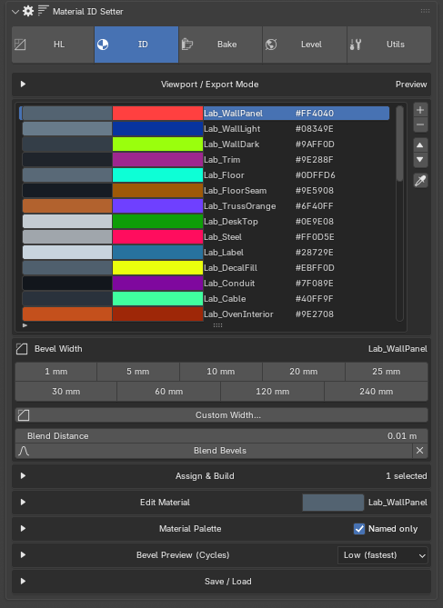
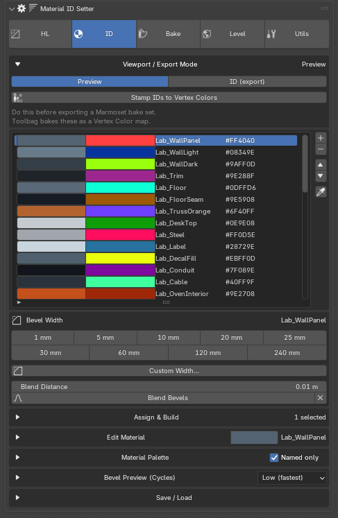
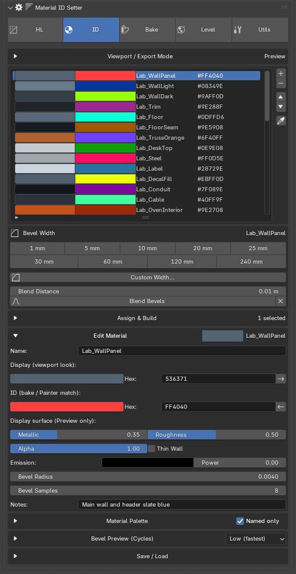
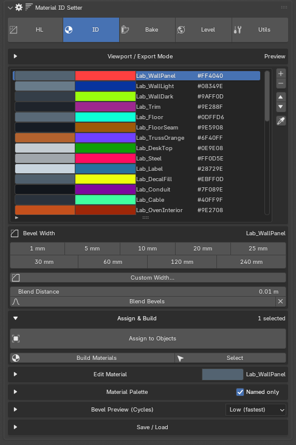
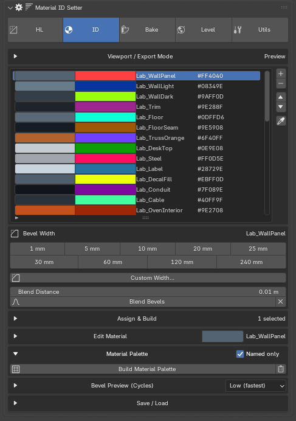
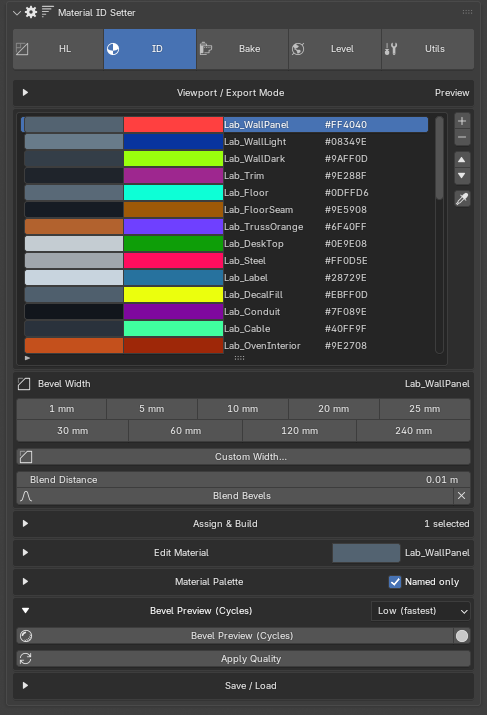
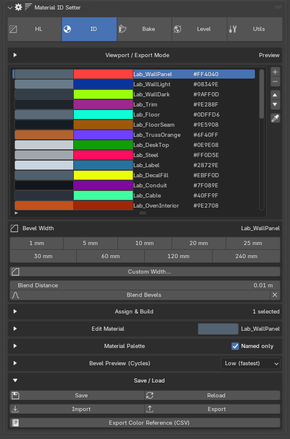
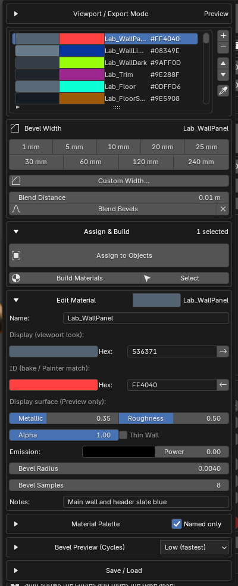

Material ID Setter¶
A library of ID materials, each with two colours: one to look at in Blender, one to bake. Assign them to objects or faces, set per-material bevel widths, and hand them to the Baker, Substance Painter or Marmoset.
Sidebar (N) → R.O.B Tools tab → ID.

Two colours per material¶
This is the idea the whole tool is built on. Every entry in the library carries:
- a Display colour — what you see in the viewport, with its own metallic, roughness, alpha and emission, so the scene stays readable while you work
- an ID colour — the flat, unlit colour that gets baked and that Substance Painter and Marmoset match against
Preview and ID (export) recolour the existing materials between the two. The mode is not a bake setting: the Baker, the vertex-colour stamp and the Marmoset JSON plugin all read ID colours from the library in either mode. Switch to ID only if you are baking the exported base colours directly.

Stamp IDs to Vertex Colors writes each face's ID colour into a MatID
colour attribute. Do it before exporting a Marmoset bake set: vertex
colours are what survive FBX, and Toolbag bakes that attribute as its Vertex
Color map, which its Color Selection masks then read like a Material ID map.
Runs on selected meshes, or on every mesh using ID materials if nothing is selected. Object Mode only — in Edit Mode the mesh data is not synced yet.
The library list¶
Always visible, directly under the mode box. Add, remove, reorder, and the eyedropper.
The eyedropper makes the list follow the mesh: pick a face and the library jumps to that face's ID, instead of you hunting for it in a list of 128.
Bevel Width¶

Never collapses, because the whole point is that setting a width is one click with no hunting. The ID comes from the faces, not from the list selection, so the library does not have to be on the right entry first — the header shows which ID the width will apply to.
Each button is a preset from the add-on preferences; the live one is depressed. Custom Width… takes any radius and does exactly what a preset button does.
With faces selected, every selected face keeps its own ID and takes the
width, and the width reaches across the border of the selection exactly as
if you had marked the border edges in Edge mode - a bevel is made from both
faces at an edge, so stopping at the selection would round it lopsided. The width is stored on the faces (MatID_FaceWidth), so each ID
stays one material however many widths you use - no ~10mm copies appear.
Any edge or vertex width inside the selection is cleared, so the whole
selection really ends up at that width. In Object Mode the width goes on
every face of the selected objects.
Assigning an ID to faces puts them back on that ID's own width. Older files
whose faces use ~mm variant materials keep working; clicking a width on
those faces moves them onto the ID's base material.
There is a pie menu for the same presets, for when your hands are on the mesh.
Blended bevels¶
Where two IDs with different widths meet, the width used to cut from one to the other at the boundary. Blend Bevels (under the width buttons) eases it instead, over Blend - the distance either side of each ID boundary the width takes to change. Select the meshes, set the distance, press it.
It writes a per-corner offset (MatID_BevelDelta) onto the selected meshes
and wires their ID materials to read it: radius = the ID's width + the
offset. A mesh that was never blended reads 0 there, so it keeps its own
widths even when it shares a material with a blended one. The ease is
sampled at vertices, so it cannot be shorter than the faces it crosses. The
X beside the button clears the blend from the selection.
R.O.B Baker bakes it on both backends: Cycles reads the attribute itself, and the native tracer takes the offsets with the scene (tracer protocol 28).
A mesh that already carries a blend re-blends by itself when a width or an ID on it changes.
Material slots stay tidy¶
Every assign and width change tidies the object's slots: slots holding the same material merge, and R.O.B ID slots no face uses go. Slots holding your own materials stay, and every face keeps its material. In older files, width variants nothing uses any more are deleted from the file as well.
Edge and vertex widths¶
Select an edge or a vertex in Edit Mode and click a width: it gets its own width while the faces keep theirs. Whole faces selected still go to the faces (Vertex or Face select mode); Edge select mode goes to the selected edges; Vertex select mode with no whole face goes to the selected vertices. The header shows "1 edge" or "1 vert". Custom Width… works the same way. A vertex width rounds every edge meeting at that corner, near the corner.
The width holds out to its own distance from the edge, then eases back to
the faces' widths over Blend Distance. It is stored as the width of the
surface around the edge (per-edge MatID_EdgeWidth, folded into the same
MatID_BevelDelta offset), because the bake's bevel - Cycles, the tracer and
Toolbag alike - rounds by distance from the point being shaded, not by edge.
Edges sharing a corner with the marked one round wider near that corner.
Where two marks share a vertex - a hole's rim and its wall edges, say - the
one set last wins; otherwise the nearest mark does. A face click counts
as a click too - a width or Assign to Faces clears the edge and vertex
widths inside the selection, and older marks stop at its vertices. Assign
to Objects clears every edge and vertex width on the object. An edge narrower than
the faces around it holds its width out as far as their width, or the wider
bevel nearby would still round it.
Blend Selection - the Blend button in Edit Mode with edges or vertices selected - eases widths along a run: give the first and last edge (or loop) their widths, select them with everything between, and press it. Each edge between takes a width by how far along the run it sits, measured along the mesh, so a curved run or uneven loop spacing still changes evenly over its real length. In Object Mode the button is Blend Bevels.
Shift+G → Mat ID Bevel Width (Select Similar) selects everything at the same width as the selection: faces by their ID's width (Same ID in the redo panel narrows it to the same ID), edges and vertices by their own width.
Edge and vertex widths don't blend ID boundaries by themselves; a mesh's boundaries only blend once Blend Bevels has been pressed on it. X in Edit Mode clears the selected edges or vertices; in Object Mode it clears everything.
Assign & Build¶

The big button follows the mode. In Object Mode it is Assign to Objects: it replaces the material on every selected mesh with the active ID. Materials live on mesh data, so linked duplicates change too — that is Blender, not the add-on, but it surprises people. In Edit Mode it is Assign to Faces: the active ID goes on the selected faces. The header shows how many objects or faces it will act on.
Build Materials creates or refreshes a material for every ID in the current mode. Run it after editing colours. Select selects every object using the active ID.
Edit Material¶
The two colour rows with hex fields, and an arrow between them to copy one colour into the other.
Below them, the display surface — metallic, roughness, alpha, thin wall, emission colour and power. These affect the Preview look only; they never reach a bake.
Then Bevel Radius and Bevel Samples for this material, and a Notes field.
Material Palette¶

Builds a grid of 10 cm swatch cubes, four wide with a 1 cm gap, parented to a
movable empty in a MatID Palette collection. Handy as a physical legend
beside the model, and as a quick check that two IDs are actually
distinguishable.
Named only skips unclaimed slots still called ID_##, so a 128-slot
library builds only the swatches you actually use.
Bevel Preview (Cycles)¶

Switches the viewport to a Cycles render that shows the bevel widths as they will actually appear, since a bevel shader does not show in Solid mode. The quality dropdown is on the header; Apply Quality re-applies it, and the solid icon exits.
Low is the fastest and is usually enough to tell two widths apart.
Save / Load¶

The library is a file, not scene data, so it follows you between projects. The header shows unsaved in red when it has drifted, and Save gains an asterisk.
Import and Export move a library between machines. Export Color Reference writes a CSV legend — name, ID hex, display hex, bevel radius, samples, metallic, roughness, alpha and notes — which is what to hand a texture artist working in Painter.
Sections move¶
Every section except the mode box and the library list can be reordered with the small arrows on its header, so the panel can be arranged in the order you actually work.

The popup carries the same controls away from the sidebar.
If something looks wrong¶
A material the Baker or Marmoset cannot stamp. The stamp takes its colours from the ID library, so a material the library does not define can never be stamped. Add it to the library, or reassign those faces to an ID that exists.
Bevel widths all look the same. Solid mode does not show a bevel shader — use Bevel Preview.
Edited colours have not changed anything. Editing the library entry does not touch existing materials. Press Build Materials.